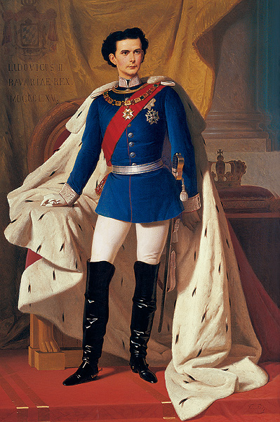
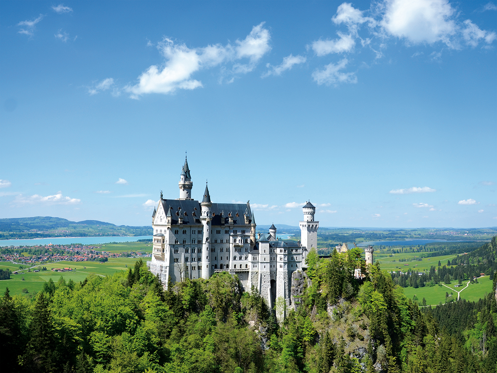
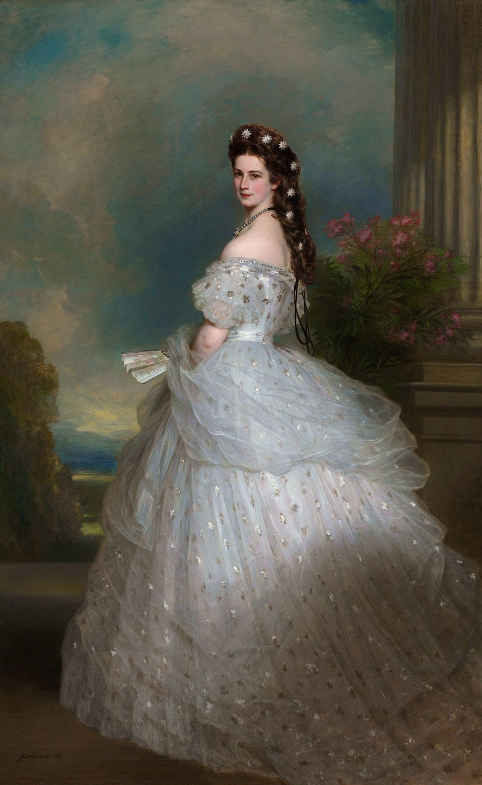
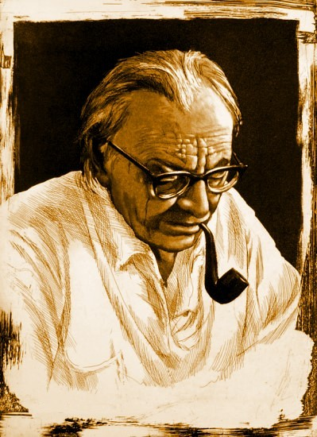
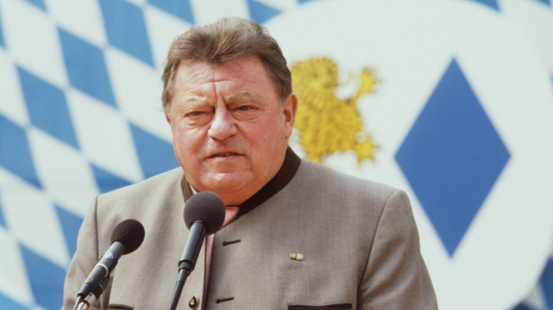
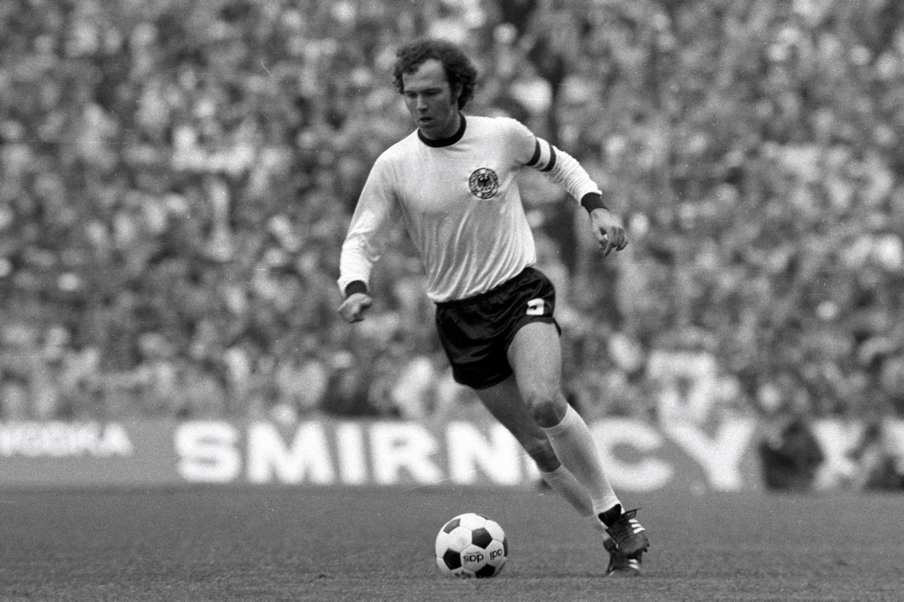

  Nacido el 25 de agosto de 1845 en el palacio de Nymphenburg, Ludwig Otto Friedrich Wilhelm von Wittelsbach, a la postre el rey Ludwig II von Bayern, o Luis II de Baviera, no representa ninguna sorpresa en este listado. Como la mayoría de miembros de su familia, nació en Múnich, capital por entonces del Reino de Baviera. La suya es una figura especialmente presente, todavía hoy, en la sociedad alemana en general, y en la bávara en particular. Fue el último rey soberano de Baviera, Rey de Cuentecillo (Märchenkönig, a menudo erróneamente traducido al español como Rey Loco), una rara avis que prefirió una vida solitaria acorde con sus convicciones que seguir el camino que otros habían marcado para él. Nunca se casó, a él (a su mecenazgo) le debemos gran parte de la obra de Richard Wagner, así como los tres magníficos palacios de fantasía que mandó construir en su territorio: Neuschwanstein, Linderhof y Herrenchiemsee. Por esto último, principalmente, lo conocemos prácticamente todos los que vivimos en Baviera. A los que todavía no saben de quien hablamos, será fácil que recuerden al personaje si adjuntamos una foto del palacio de Neuschwanstein. ¿Disney? ¿Los puzzles de nuestra infancia? En efecto.
 Los lazos entre Sissi y Luis II son de carácter sanguíneo. Isabel Amalia Eugenia de Baviera, más conocida como Sissi Emperatriz (de Austria) nació en Múnich unos años antes que el rey Luis II, en 1837, en el seno de su misma familia. De hecho, era prima hermana del rey Maximiliano II (padre de Luis II). Su historia, la que nos han contado, es de sobras conocida: con 16 años fue casada con su primo y emperador de Austria, Francisco José I, convirtiéndose en una joven, bella y desdichada emperatriz. Guapa, culta, rebelde, inadaptada, extemporánea, desdichada… incluso anoréxica, son algunas de las etiquetas que suelen vincularse a su nombre. En cualquier caso, su vida opulenta y fastuosa estuvo cargada de desgracias, entre ellas la muerte de su único hijo varón y heredero al trono austriaco, el príncipe Rodolfo que (supuestamente) se suicidó a los 30 años. La misma Sissi falleció en un suceso trágico: el 10 de septiembre de 1898 fue atacada mortalmente por un anarquista italiano a orillas del lago suizo de Lemán.
 Si no te gusta la música no te sonará su nombre. Si buscas en Google ”música Carmina Burana”, clicas y escuchas un rato, cambiará la cosa. Nacido y fallecido en Múnich (1895-1982), el compositor Carl Orff está considerado uno de los grandes de la música en el siglo XX. Su método de enseñanza musical y, especialmente, su épica obra Carmina Burana le han permitido pasar a la posteridad. Unos cuantos apuntes: empezó a tocar el piano con 5 años; con 16 empezó a publicar sus obras musicales; interrumpió sus estudios para integrarse en el Ejército alemán durante la I Guerra Mundial; en los años 20 escribió los Carmina Burana, basados en una colección homónima de cantos goliardos de los siglos XII y XIII; durante el nazismo, su obra fue especialmente popular, por lo que se le llegó a acusar en la postguerra de colaboracionista. En Múnich encontramos una calle dedicada a su figura, así como varias salas de música (por ejemplo, en Gasteig, sede de la Filarmónica).
 Puede que tampoco lo conozcas, pero si llegas y sales de Múnich en avión, entonces te sonará su nombre. Franz-Josef-Strauss (Múnich, 1915 – Ratisbona, 1988), cuyo nombre ha sido adoptado por el aeropuerto internacional de Múnich, es una especie de padre político de la familia democristiana contemporánea de Baviera. Y no es poco, su partido, la CSU, ha sido el más votado ininterrumpidamente en el land desde el final de la II Guerra Mundial (en las últimas elecciones regionales obtuvo el 47,7% de los votos). Emprendió su carrera política en la postguerra, participando como ministro de Defensa y Hacienda en diversos gobiernos federales. En 1978 se convirtió en ministro presidente de Baviera, cargó que ostentó hasta su muerte en 1988. Sus críticos destacan su ideología extremadamente conservadora y su personalidad conflictiva; sus seguidores, su carisma; de lo que no hay duda es de su gran influencia sobre la marcha política de Múnich y Baviera en la segunda mitad del siglo XX, quizás hasta la actualidad.
 Teniendo en cuenta que Múnich es el hogar del FC Bayern, lo lógico es que la ciudad sea cuna de algunos grandes futbolistas. Algún día me pongo con ello (pues además del que nos ocupa, hay unos cuantos grandes futbolistas muniqueses más), pero en esta ocasión sobresale un solo nombre: Franz Anton Beckenbauer (Múnich, 1945). Presidente honorario del FC Bayern, Beckenbauer está considerado uno de los mejores futbolistas de la historia. El Kaiser, como se le llamaba, fue el mejor defensa de su tiempo, máximo exponente de una posición hoy extinguida de los terrenos de juego: la de líbero. Sus números, por cierto, de escándalo: dos veces Balón de Oro como mejor jugador del año, cinco veces campeón de Bundesliga, tres veces campeón de Europa con el FC Bayern, campeón de Europa con Alemania en 1972, campeón del Mundo con Alemania en 1974… incluso fue campeón del Mundo con Alemania como entrenador, en 1990. Eso sí, su faceta como entrenador no ha sido especialmente prolífica. En todo caso, el FC Bayern es hoy lo que es por Beckenbauer y el gran equipo de su generación.
El último muniqués de la lista es igualmente o más conocido que los demás, extremadamente influyente sobre la Historia contemporánea, pero un personaje deleznable, lamentable, de cuya no existencia no nos hubiéramos lamentado la mayoría de nosotros. Se trata de Heinrich Himmler (Múnich, 1900 – Luneburgo, 1945), Reichsführer-SS, el máximo dirigente de las SS, la organización nazi militar y política responsable, entre otros, del asesinato de millones de personas en campos de concentración durante la II Guerra Mundial. A él se le atribuye de hecho la organización de la red de campos de concentración y exterminio creada por los nazis durante el Tercer Reich y la guerra. Desde 1942 y hasta el final de la contienda (para Alemania), además, fue Ministro del Interior. Detenido por las tropas aliadas, se suicidó el 23 de mayo de 1945 estando bajo custodia de los británicos.